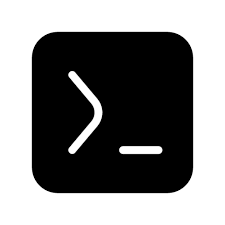
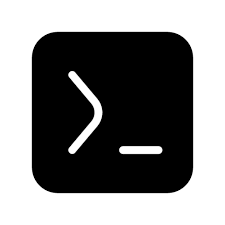

O que é CMD
Prompt de Comando ou CMD é um interpretador de linha de comando no OS/2 e de sistemas baseados no Windows NT. Ele é um comando análogo ao command.com do MS-DOS e de sistemas Windows 9x, ou de shells utilizados pelos sistemas Unix.
Prompt de Comando ou CMD é um interpretador de linha de comando no OS/2 e de sistemas baseados no Windows NT. Ele é um comando análogo ao command.com do MS-DOS e de sistemas Windows 9x, ou de shells utilizados pelos sistemas Unix.
